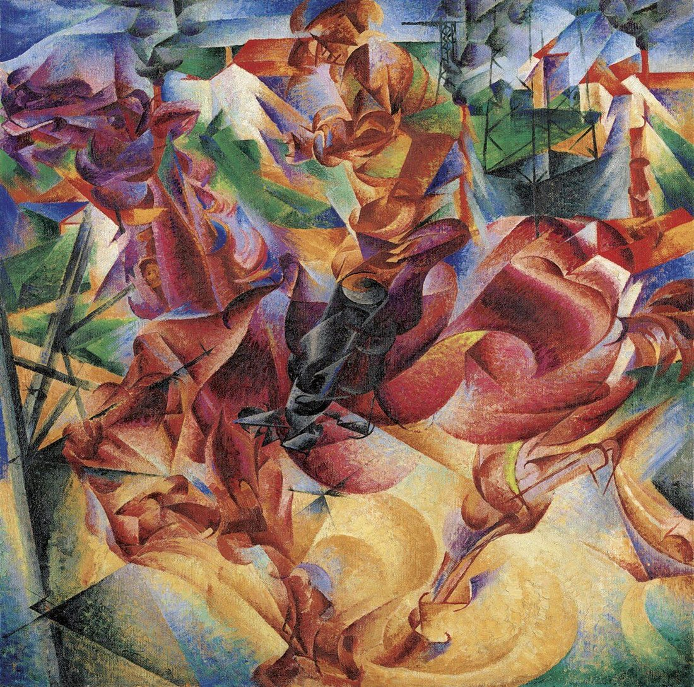

References / Painting / 449
Elasticity
Umberto Boccioni fuses a galloping horse and rider with an industrial landscape of pylons and factories, so that the bodies, the ground, and the buildings share one set of curving planes.
- Source
- Wikimedia Commons: Umberto Boccioni, 1912, Elasticity, Museo del Novecento
- Creator
- Umberto Boccioni
- Made
- 1912
- Style
- Italian Futurism (agent-proposed, not yet reviewed by a person)
- Moods
- Fast, exuberant, mechanical
- Evidence
- Downloaded and inspected the Commons file (1100 × 1089 px; credited to the blog artblart, not to the museum). The physical work is the painting in the Museo del Novecento, Milan, Jucker Collection, according to Italian Wikipedia) as summarized by a web search; that page was not opened directly. The museum’s inventory number was not checked.
- Reviewed
- Rights
- Open license, stored. License: public domain. Rights policy
,_oil_on_canvas,_100_x_100_cm,_Museo_del_Novecento.jpg){kind=link}
Context
Oil on canvas, 100 × 100 cm, 1912, Museo del Novecento, Milan, Jucker Collection. The painting shows a rider at speed in an industrial landscape. Italian Wikipedia: Elasticità (Boccioni)).
The Museo del Novecento has digitized the painting in gigapixel resolution. Finestre sull’Arte.
Observed
- A red and crimson horse fills the lower half, its legs and body drawn as stacked curved planes; a rider in ochre and brown sits above it.
- A dark blue-black form at the center, possibly the horse’s head or a harness, is the only near-black area.
- Behind and through the figures are green fields, red-roofed factories, smoking chimneys, and a lattice electricity pylon at upper right.
- Thin straight black lines cross the lower left like struts or rays.
- Pale yellow spirals and arcs at the bottom suggest dust or the curve of the gallop.
- The palette is saturated and prismatic: red, crimson, violet, ochre, green, and blue, with small white highlights.
Why it belongs
Elasticity sits between The City Rises and Dynamism of a Cyclist: the horse is still present, but the forms are now planes that also belong to the surrounding landscape, so the animal and the machine age merge.
The pylon and chimneys keep the Futurist subject of the electrified, industrial city in a picture of a horse.
Borrow
Let a moving subject share its planes with the background so that the boundary disappears at the points of greatest speed.
Use a square format filled edge to edge, with no calm margin.
Put one dark accent at the center of a hot palette to anchor the composition.
Measured
Machine-extracted by tools/image-traits.py on . Full measurement.
- Mean chroma
- 0.22
- Palette
- #546a54 5%
- #424e47 5%
- #a96049 4%
- #c18f55 4%
- #9f4e3d 4%
- #8b3e34 4%
- #323436 4%
- #cea461 4%

